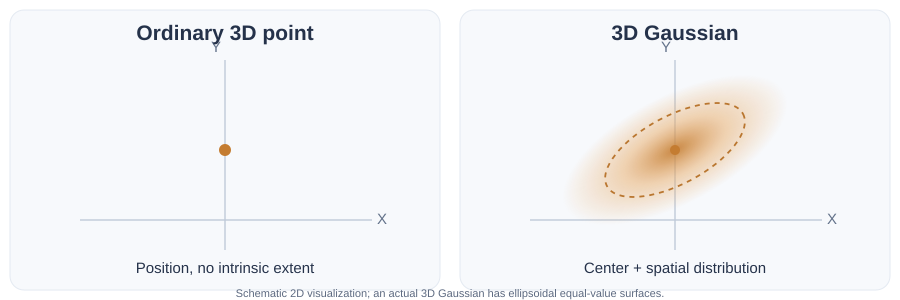
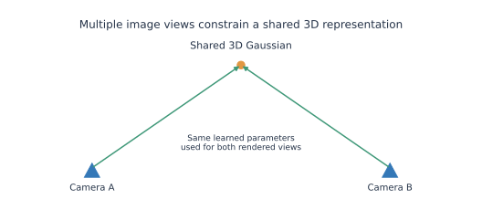
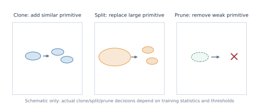
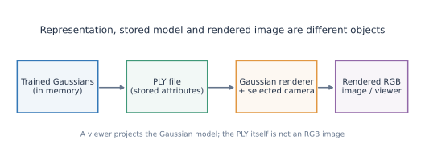

3D Gaussian Splatting Fundamentals
From one Gaussian to a scene that can be rendered from different camera viewpoints.
Who should read this page?
This introduction is intended for readers familiar with machine learning but relatively new to 3D scene representations. It explains the ideas shared by Vanilla 3DGS and extensions such as Feature 3DGS. For the prerequisites—image coordinates, camera intrinsics/extrinsics, COLMAP, NeRF, and general rendering terminology—see Computer Vision Fundamentals.
This page emphasizes mental pictures and terminology. The forthcoming vanilla-3dgs.md will develop the original algorithm in detail, including its loss function, rasterizer, density-control decisions, and code-oriented experiments.
Learning path: The big picture · One Gaussian · Gaussian attributes · Projection · Making an image · Learning · Trained scene · Interactive walkthrough
1. The big picture
3D Gaussian Splatting (3DGS) represents a scene as a collection of spatially extended, trainable 3D Gaussian primitives. Given a camera viewpoint, a renderer projects these Gaussians into the camera image and combines their contributions to produce pixels.

At a conceptual level:
- Photographs provide examples of what the real scene looked like from particular cameras.
- Camera reconstruction provides estimated camera poses and sparse 3D points, commonly using COLMAP.
- Gaussian initialization turns the sparse points into an initial set of primitives with position, shape, opacity, and appearance values.
- Training changes those Gaussian attributes so that rendered images better reproduce the photographs.
- Rendering uses the optimized Gaussians and a selected camera to generate an RGB image, including from a new viewpoint.
Representation versus task
3DGS is a way to represent and render a scene. Novel-view synthesis is one task enabled by such a representation. A Gaussian collection is not itself a photograph, a mesh, or a set of semantic object labels.
This page concentrates on the Gaussian representation and how it participates in those steps, rather than repeating the camera-geometry and COLMAP material from the CV reference.
2. What exactly is a 3D Gaussian?
A 3D point identifies a location. A 3D Gaussian identifies a location and a smooth spatial influence around it.

A convenient unnormalized Gaussian function is
Here, \(\boldsymbol\mu\) is its 3D center, \(\boldsymbol\Sigma\) is its \(3\times3\) covariance matrix, and \(\mathbf{x}\) is a location where we evaluate the Gaussian. At the center, \(G(\boldsymbol\mu)=1\); influence decreases smoothly away from it.
The ellipsoids shown in 3DGS illustrations are equal-value surfaces of that function, not hard boundaries. The function does not suddenly become zero at an ellipsoid's edge.
Isotropic and anisotropic shapes

| Term | Mental picture |
|---|---|
| Isotropic | Equal spread in every direction: a sphere-shaped level surface. |
| Anisotropic | Unequal directional spread: an elongated or flattened ellipsoid. |
| Rotation | Turns the ellipsoid in 3D without moving its center. |
| Scale | Determines how broadly the Gaussian extends along each of its local axes. |
Example: A Gaussian representing part of a flat chair seat may be wide in two directions and very thin in the third. Another near a narrow chair leg may have a different elongated shape. These are learned spatial approximations; the ellipsoids are not solid pieces of furniture.
Try it: Gaussian shape and opacity
Move the scale, rotation, and opacity controls below. In particular, observe that changing opacity does not change the ellipsoid's shape.
Open the Gaussian explorer separately
Teaching-model limitation: this interactive demonstration shows a 2D cross-section of the Gaussian. The actual primitive and its covariance exist in 3D.
3. What information does one Gaussian store?
Each Gaussian has its own learnable attributes. It helps to separate stored parameters from quantities computed from those parameters.
| Attribute | Meaning | What it changes |
|---|---|---|
| Position \(\boldsymbol\mu=(x,y,z)\) | The center in world coordinates | Where the Gaussian is located |
| Three scales \((s_x,s_y,s_z)\) | Spread along local axes | Its 3D size and thickness |
| Rotation \(q\) | Orientation, usually represented as a quaternion | The direction of its elongated/flat shape |
| Opacity \(o\) | Base visibility/opacity control | How strongly it contributes where projected |
| Appearance | Usually spherical-harmonic (SH) color coefficients in Vanilla 3DGS | Its RGB color as a function of viewing direction |
The covariance is derived from scale and rotation:
This says: start with three directional spreads, then rotate those directions into the scene's coordinate system. You do not need to memorize a full covariance matrix for each Gaussian when thinking about it visually.
Three different things
- 3D Gaussian: the scene primitive and its learnable attributes.
- Projected 2D Gaussian: the primitive's camera-dependent footprint in an image.
- Rendered pixel: the result of combining contributions from Gaussians at one image position.
Color is not necessarily one fixed RGB triplet

Spherical harmonics are angular basis functions. Their coefficients allow a Gaussian to produce different colors from different viewing directions, for example when approximating a shiny surface. The coefficients stay the same for a trained Gaussian; the evaluated color can change when the camera moves.
This is distinct from opacity: SH determines the Gaussian's color for a direction; opacity and its projected footprint help determine how much that color affects a pixel. The full SH basis equations belong in the Vanilla 3DGS tutorial.
4. From 3D space to a 2D image
A camera does not observe the 3D Gaussian directly. For a chosen camera, the renderer projects its center and spatial extent onto an image plane.

The same Gaussian may therefore appear:
- large from a nearby camera and small from a distant one;
- wide from one viewing direction and narrow from another;
- at different pixel positions in two photographs of the same scene.
The Gaussian itself has not moved. Only its relationship to the camera has changed.
One Gaussian can contribute to many pixels

A projected Gaussian has a continuous, typically elliptical footprint. Nearby pixels receive different footprint weights, which are combined with the Gaussian's opacity to produce effective alpha at each pixel.
For intuition, suppose its base opacity is \(0.8\):
| Pixel location | Illustrative footprint weight | Effective alpha |
|---|---|---|
| At the projected center | \(1.00\) | \(0.80\) |
| Away from the center | \(0.50\) | \(0.40\) |
| Near the footprint edge | \(0.10\) | \(0.08\) |
The Gaussian is not assigned a separate learned color for each of these pixels. Its color for that camera direction is evaluated, while its contribution strength changes across the footprint.
Try it: camera depth and footprint size
Open the projection explorer separately
Teaching-model limitation: the explorer simplifies Gaussian projection to make the geometry visible. The actual renderer computes a projected 2D covariance accounting for 3D shape, rotation, and camera perspective.
5. How many Gaussians make one image?
One Gaussian can influence many pixels, and one pixel can receive contributions from many Gaussians. Neither relationship is one-to-one.

Consider a pixel where two Gaussians overlap:
- The front Gaussian contributes part of its color.
- The rear Gaussian is visible only through the transparency left by the front one.
- Any remaining transparency reveals the background.
This combination is called alpha compositing. In a small illustrative example, a front Gaussian with effective alpha \(0.6\) contributes with weight \(0.6\). A rear Gaussian with effective alpha \(0.5\) contributes with weight \((1-0.6)\times0.5=0.2\). The remaining background weight is \(0.2\).

Depth order depends on the camera. There is no permanent “front Gaussian” label stored in the model. Real 3DGS also uses image tiles and visibility-aware rasterization to process these contributions efficiently; the exact tile assignment, sorting, and compositing algorithm belongs in vanilla-3dgs.md.
6. What does training actually change?
At initialization, Gaussians already have numerical parameter values. Training does not fill an empty Gaussian with pixels. It adjusts the parameters so their rendered image better matches an observed image.

For a training viewpoint, the basic cycle is:
- Choose one registered camera and its reference photograph.
- Render the current Gaussians through that camera to predict an RGB image.
- Compare the prediction with the reference photograph using an image loss.
- Backpropagate the loss through the differentiable renderer.
- Update the Gaussian parameters with an optimizer, then repeat with training views.

The key multi-view idea: the camera images change between training iterations, but the same persistent collection of 3D Gaussians is being optimized. A Gaussian that contributes to a chair in several photographs does not become a different Gaussian in every image.
Why does the number of Gaussians grow?
Some scene regions need more primitives to reconstruct image details. Adaptive density control can add Gaussians by cloning or splitting, and remove unhelpful Gaussians by pruning.

| Operation | Basic meaning |
|---|---|
| Clone | Add another Gaussian derived from an existing one. |
| Split | Replace a relatively large Gaussian with smaller Gaussians. |
| Prune | Remove a Gaussian that meets removal criteria, including very low opacity. |
In the original Vanilla 3DGS, the decisions use programmed rules and accumulated training statistics; there is no separate network that learns semantic decisions such as “split the chair.” The exact gradient thresholds, size tests, timing, and parameter changes will be treated in the Vanilla 3DGS page.
Separate rendering from learning
Rendering calculates an image from the current parameters. Loss, backpropagation, and optimization change those parameters. Density control may also change how many Gaussians exist. None of these operations requires assigning semantic object labels.
7. What remains after training?

The trained scene is still a collection of Gaussians, not a stack of saved rendered images. A common official output is point_cloud.ply, containing per-Gaussian parameters such as positions, SH color coefficients, opacity parameters, scales, and rotations.
| Item | What it represents |
|---|---|
| COLMAP sparse point | A reconstructed 3D location used to help initialize the scene |
| Trained Gaussian | A persistent optimized primitive with spatial and appearance attributes |
point_cloud.ply |
Saved Gaussian attributes, not a regular RGB photograph |
| Rendered image | Pixels produced for a particular camera from the trained scene |
| Novel view | An image rendered from a camera viewpoint not necessarily present in the training photos |
A PLY viewer must understand the particular Gaussian attribute conventions to render these models correctly. For example, in standard Vanilla 3DGS exports, scale and opacity are stored in parameterized forms (log scale and opacity logit), rather than directly as their activated values. Inspection of individual PLY fields belongs in the practical Vanilla tutorial.
Example from my indoor-scene training: a 30,000-iteration Vanilla 3DGS model contains 637,141 trained Gaussians. That number is a count of scene primitives—not a pixel count, not an image count, and not a number of object instances.
8. Interactive walkthrough: from photographs to a trained scene
This guided demonstration connects all the pieces of the mental model: images → initial points → Gaussian parameters → rendering → image loss → parameter updates. It is the best place to experiment if the overall process still feels abstract.
Open the full interactive 3DGS pipeline tutorial
This guided simulation is not a complete 3DGS implementation: it does not run COLMAP or the CUDA rasterizer, and its optimization is deliberately simplified.
Five checks before proceeding
- A Gaussian is a 3D primitive, not an individual pixel.
- Its 3D geometry is stored; its 2D footprint depends on the camera.
- SH gives view-dependent color; opacity and footprint determine pixel contribution.
- Rendering produces pixels, while optimization updates Gaussians.
- Multiple photographed views supervise one shared 3D scene, which can later be rendered from new viewpoints.
If those distinctions are clear, you have the conceptual foundation needed to study the complete Vanilla 3DGS algorithm.
Continue learning
- Previous: Computer Vision Fundamentals — camera geometry, SfM/COLMAP, NeRF, and general rendering terms.
- Next: Vanilla 3DGS — complete Gaussian initialization, covariance projection, spherical harmonics, tile-based rasterization, alpha compositing, RGB reconstruction loss, backpropagation, densification, and experiments with a trained PLY.
- Later: Vanilla 3DGS — how feature-bearing Gaussians are supervised using pretrained 2D teacher features.
- Finally:
comparison.md— a direct Vanilla/Feature 3DGS comparison once both tutorials are complete.